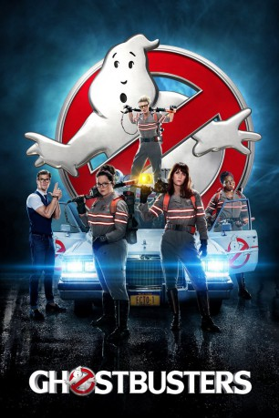

gesehen am 22.12.2016
gesehen am 22.12.2016 
 IMDB-Wertung: 5.4 / 10
IMDB-Wertung: 5.4 / 10  Tomatometer: 74
Tomatometer: 74  Metascore:
Metascore: 
Abby Yates hat schon immer an Gespenster geglaubt, obwohl sie dafür belächelt wird. In einem Labor erforscht sie das Paranormale, unterstützt von der schrägen, aber genialen Ingenieurin Jillian Holtzmann, die abgefahrene Anti-Geister-Waffen bastelt. Abbys alte Freundin Erin Gilbert hat das umstrittene Forschungsgebiet hingegen für eine Karriere als seriöse Physikerin aufgegeben, was einst zum Bruch zwischen den beiden Partnerinnen führte. Doch als Erin kurz vor einer Festanstellung an der renommierten Columbia-Universität steht, wird sie von der gemeinsamen Geisterforschervergangenheit eingeholt. Sie bittet Abby um Hilfe, aber die wittert schnell eine ganz andere Gelegenheit und schleppt Erin mit zu einem Herrenhaus aus dem 19. Jahrhundert, in dem es zu einer Geistererscheinung gekommen sein soll. Nach diesem Termin ist nichts mehr so wie vorher: Die Frauen mischen als Ghostbusters New York auf und erhalten durch die resolute U-Bahn-Angestellte Patty Tolan weitere Verstärkung.
Jahr: 2016
Dauer: 116 Minuten
FSK: 12
Land: USA Studio: Columbia PicturesTonspuren: DTS - ,
Untertitel: Deutsch,
Auflösung: 1080p (1920x808) Größe: 7905 MB
Genre: Action, Sci-Fi, Komödie, Fantasy
Regisseur: Paul Feig
Drehbuch: Dan O'Bannon
Soundtrack:
Darsteller:
Datei: X:\3-Trilogie(G-M)\Ghostbusters\Ghostbusters (2016, FSK12, 1920x808) 3D.mkv seit 07.12.2016
Festplatte: HD Collection-2(A-Z)-3(A-M)
 Es gibt insgesamt 7 Filme in der Gruppe '3-Trilogie(G-M)\Ghostbusters'
Es gibt insgesamt 7 Filme in der Gruppe '3-Trilogie(G-M)\Ghostbusters'